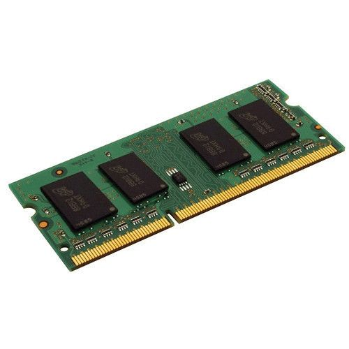
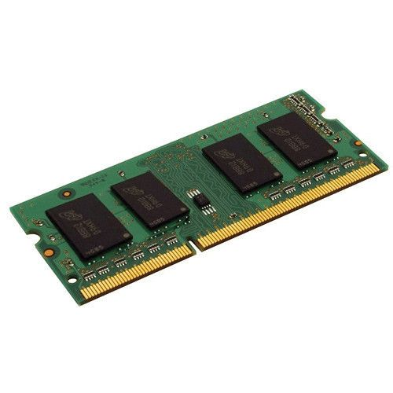

Algemene informatie over de werking van de computer
1. Invoer
Invoer is het eerste stadium van de informatieverwerking in een computer.
Hier wordt externe informatie in het computersysteem gebracht voor verwerking.
Invoerapparaten zoals toetsenborden, muizen en microfoons zetten fysieke handelingen of gegevens om in een digitale vorm die begrijpelijk is voor de computer.
Bijvoorbeeld, als je op een toets drukt op het toetsenbord, wordt de corresponderende tekst ingevoerd in het computersysteem.
2. Verwerking
Na de invoer begint het proces van verwerking. De verwerking van gegevens vind plaats in de centrale verwerkingseenheid (CPU), het brein van de computer.
Hier worden de binnengekomen gegevens verwerkt volgens instructies die zijn vastgesteld in softwareprogramma's.
De CPU voert heel veel rekenkundige bewerkingen uit om de gegevens te manipuleren, vergelijken, sorteren, filteren en andere acties uit te voeren op basis van de ontvangen instructies.
In de verwerkingsfase wordt het geheugen (RAM) gebruikt om tijdelijke gegevens op te slaan die momenteel worden gebruikt of bewerkt. De CPU haalt instructies op uit het RAM-geheugen en voert de benodigde bewerkingen uit.
3. Uitvoer
Nadat de verwerking is voltooid, wordt het resultaat weergegeven aan de gebuiker via uitvoerapparaten zoals beeldschermen, printers en luidsprekers.
Uitvoer vertaalt de digitale informatie die door de computer is verwerkt in een vorm die de mens kan begrijpen.
4. Opslag
Opslag is een cruciale fase waarin gegevens en programma's worden bewaard voor als je het later nodig hebt.
Dit is niet alleen permanente opslag zoals harde schijven en solid-state drives, maar ook tijdelijke opslag zoals het RAM van de computer.
De gegevens worden netjes opgeslagen in formaten, georganiseerd in bestanden en mappen.
De opgeslagen gegevens kan je later wijzigen of opnieuw gebruiken.
Meer informatie over de werking van de computer?
Begrippenlijst
- Algoritmen: Bij elkaar behorende instructies in een programmeertaal die een bepaald probleem oplossen of een bepaalde taak uitvoeren.
- Harde schijf (HDD): Een elektromechanisch computeronderdeel waarop gegevens bewaard kunnen worden.
- Solid-state drives (SSD): De opvolger van de HDD(harde schijf), met een hogere snelheid en een lagere kwetsbarheid dan de HDD.
- CPU (Centrale Verwerkings Eenheid): De centrale chip die al het rekenwerk doet, het hart van de computer.
- RAM(Random Access Memory): Computer geheugen in de vorm van chips op het moederbord. Bij het functioneren schrijft de computer steeds data weg naar de RAM en haalt het daar weer vandaan.
Bron: